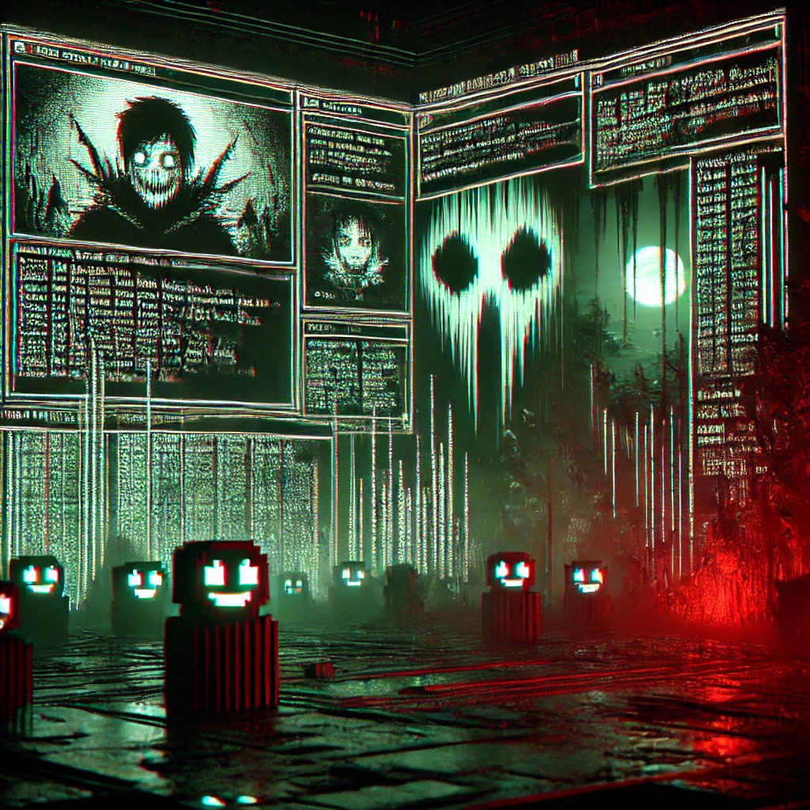

Attention: Unauthorized access to this information is prohibited. The government has identified a new illegal Minecraft mod circulating across the underground networks. This mod allows users to manipulate the Minecraft world in ways never intended by its creators. Reports indicate that the mod was developed using reverse-engineering techniques, exploiting game vulnerabilities to create unfair advantages. Downloading and distributing this mod may lead to severe consequences.
However, it has recently been reported that the government has successfully taken down the website and mod, which were proven to be haunted. Players who used the mod have reported strange occurrences, including unexplained crashes, eerie sounds, and unsettling visual glitches. Authorities believe these disturbances may be linked to unauthorized alterations made to the mod, creating an unstable and potentially dangerous experience.
The mod’s creators are believed to have disappeared, leaving behind only cryptic messages and digital traces. All attempts to trace the origin of the haunting continue, but the mod has been permanently shut down for safety reasons. Any users still in possession of the mod should delete it immediately to avoid further complications.